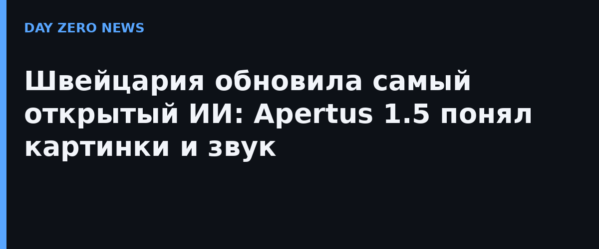

Swiss AI Initiative — совместный проект EPFL, Цюрихского политеха (ETH Zurich) и национального суперкомпьютерного центра CSCS — выпустила Apertus 1.5. Это продолжение дообучения первого поколения: модели на 8 и 70 млрд параметров получили ещё 4 трлн и 2 трлн токенов соответственно (всего 19 трлн и 17 трлн за всю историю тренировки). Веса выложены на Hugging Face 24 июля 2026 года под лицензией Apache 2.0, а технические детали собраны в отдельный техотчёт.
Главное — мультимодальность: Apertus 1.5 принимает изображения и звук вместе с текстом, так что документы, схемы и фото можно обсуждать напрямую (разговорная речь пока в статусе экспериментальной функции). Добавлен переключаемый «режим размышления» — модель сначала строит ход рассуждений, потом отвечает, что заметно поднимает результат на задачах со смыслами. Контекстное окно выросло в четыре раза — до 262 144 токенов. Ещё модели стали лучше следовать инструкциям и увереннее пользоваться внешними инструментами и API.
Классическая схема «открыли веса — и хватит» здесь не работает: вместе с весами опубликованы обучающие данные (репозиторий apertus-data-transparency), хартер ценностей модели и полные детали тренировочного пайплайна — от продолженного предобучения через SFT и RLVR до DPO и SDPO. На фоне закрытых фронтир-моделей это редкий случай, когда исследователь может воспроизвести и проверить всю цепочку, а не только результат.
Apertus задумывался как ответ Европы на вопрос «а свой большой ИИ у нас есть?». Швейцария сделала ставку на модель, которую может изучить, доработать и запустить у себя любая организация или государство — без лицензии, без звонка вендору и без передачи данных за океан. Для регуляторов, банков и науки в ЕС это аргумент не слабее, чем бенчмарки.